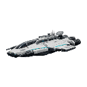

Wiki / Stat Reference / Ships / Vector Sovereign

Ships
Vector Sovereign
Vector Sovereign command hull — armor-bypassing railguns and low-mass phased shielding.
- Faction
- Technocrat Union
- Ship Class
- Cutter
- Ship Tier
- Common
- Hull Role
- Command
- Hull Rarity
- Uncommon
Base Health
1,620
Base Shield Energy
720
Base Ship Speed
484
Cargo Bay Capacity
90
Max Mass
180
Build Cost Minerals
405
Defense
- Base Health
- 1,620
- Base Shield Energy
- 720
- Base Shield Recharge Rate
- 36
- Innate Energy Resistance
- 0
- Innate Explosive Resistance
- 0
- Innate Kinetic Resistance
- 0
- Innate Alien Resistance
- 0
- Innate Void Resistance
- 0
- Innate Stasis Resistance
- 0
- Innate Plasma Resistance
- 0
Offense
- Innate Shield Bypass
- 0
- Innate Armor Bypass
- 0.1
Mobility & Sensors
- Max Mass
- 180
- Unladen Mass
- 95
- Base Ship Speed
- 484
- Base Strafe Speed
- 290
- Base Rear Speed
- 242
- Base Turning Speed
- 88
- Acceleration
- 238
- Base Sector Speed
- 135
- Collision Radius
- 62
- Base Sensor Range
- 3,738
Slots & Capacity
- Cargo Bay Capacity
- 90
- Max Weapon Slots
- 2
- Max Armor Slots
- 2
- Max Shield Slots
- 1
- Max Special Slots
- 3
- Max Hangar Slots
- 0
- Max Screen Slots
- 2
- Fleet Member Limit
- 10
Carrier & Squadrons
- Carrier
- No
- Squadron Count
- 0
- Squadron Capacity
- 0
- Squadron DPS
- 0
- Squadron Speed
- 0
- Squadron Range
- 0
- Squadron Health
- 0
Overdrive
- Overdrive Charge Rate
- 0.042
- Overdrive Duration
- 8
- Overdrive Speed Boost
- 0.25
- Overdrive Damage Boost
- 0.2
- Overdrive Shield Boost
- 0.15
Effects & Buffs
- Can Resurge
- No
- Resurgence Cooldown
- 0s
- Resurgence Health Percent
- 0
Production & Economy
- Hull XP
- 101
Repair
- Repair Time Base
- 213
- Repair Cost Base
- 142
- Repair Cost Minerals
- 142
- Repair Cost Helium
- 0
- Repair Cost Antimatter
- 0
Cost & Build Time
- Build Time
- 10m 8s
- Build Cost Minerals
- 405
- Build Cost Helium
- 0
- Build Cost Antimatter
- 0
- Lab Time Total
- 15m 12s
Requirements
- Required Lab Level
- 2
- Required Player Level
- 10
- Limited Edition
- No
- Requires Research
- No
Mark Levels
| Mark Level 1 | Mark Level 2 | Mark Level 3 | Mark Level 4 | Mark Level 5 | |
|---|---|---|---|---|---|
| Health Multiplier | 1 | 1.15 | 1.32 | 1.52 | 1.75 |
| Shield Energy Multiplier | 1 | 1.15 | 1.32 | 1.52 | 1.75 |
| Speed Multiplier | 1 | 1.05 | 1.1 | 1.16 | 1.22 |
| Mass Multiplier | 1 | 1.08 | 1.16 | 1.25 | 1.35 |
| DPS Multiplier | 1 | 1.15 | 1.32 | 1.52 | 1.75 |
| Additional Weapon Slots | 0 | 0 | 1 | 1 | 2 |
| Additional Armor Slots | 0 | 0 | 0 | 0 | 1 |
| Additional Shield Slots | 0 | 0 | 0 | 0 | 1 |
| Additional Special Slots | 0 | 0 | 0 | 1 | 1 |
| Unlock XP Cost | 0 | 243 | 535 | 1,176 | 2,587 |
| Unlock Coin Cost | 0 | 405 | 891 | 1,960 | 4,312 |
Firing Arcs
| Arc Index | Arc Width | Arc Offset | Weapon Slots |
|---|---|---|---|
| 0 | 140 | 0 | 2 |
Hull Abilities
| Ability Name | Ability Description | Buff Type | Buff Value | Passive | Cooldown | Duration |
|---|---|---|---|---|---|---|
| Foreman's Call | Coordinated fire improves fleet weapon damage. | Weapon Damage | 0.06 | Yes | 0s | 0s |